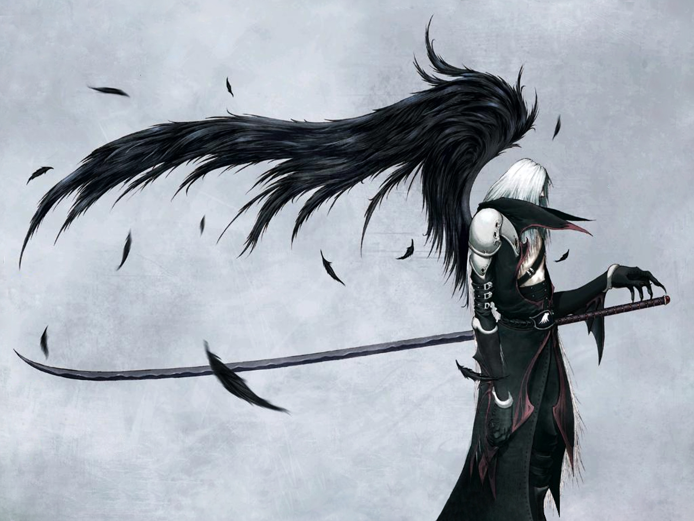

<!DOCTYPE html>
<html>
<head>
    <title></title>
</head>
<link href='http://fonts.googleapis.com/css?family=Amarante' rel='stylesheet' type='text/css'>
<style>

    body {
        padding: 0;
        margin: 0;
        border: 0;
        background-color: #000;
    }

    #contenedor {
        position: absolute;
        left: 50%;
        margin-left: -300px;
        width: 600px;
        vertical-align: central;
        color: #fff;
    }


</style>
<body>


<div id="contenedor" class="divCentrado">
    <!-- -->
</div>


<script src="js/modernizr.custom.31795.js"></script>
<script>

    var canvas, context,imageObj,imageData;

    window.onload = function () {

        var contenedor = document.getElementById("contenedor");

        if (Modernizr.canvas) {
            canvas = document.createElement("canvas");
            canvas.with = 800;
            canvas.height = 800;
            contenedor.appendChild(canvas);
            context = canvas.getContext("2d");
            context.strokeStyle = "#f0ff00";
            context.lineWidth = 2;

            crearImagen();

        } else {
            contenedor.innerHTML = "el navegador no soporta canvas";
        }


        function crearImagen(){
            /*  var sprite = document.getElementById("fondo");
             context.drawImage(sprite,0,0);*/

            var _self = this;
            imageObj = new Image();
            imageObj.onload = function (){
                dibujaImagen();
                canvas.addEventListener("mousedown",function (e){
                    addListeners();
                    procesaImagen();
                    zoom(e);
                });
            };
            imageObj.src ="img/wallpaper-41800.jpg";


        }


        function dibujaImagen(){
            context.save();
            context.scale(0.8,0.8);
            context.drawImage(imageObj,0,0); //y aqui he dibujado la imagen
            //context.drawImage(imageObj,0,0,100,400,0,0,100,100); cortes sobre una imagen, o que se valla moviendo dinamicamente
            context.restore();
            if(imageData != null){
            context.putImageData(imageData,0,0);
            }
        }


        function addListeners(){
            canvas.addEventListener("mousemove",function (e){
                zoom(e);
            });

            document.addEventListener("mouseup",function (e){

                document.removeEventListener("mousemove",null);
                // dibujaImagen(); --> metodos separados
            });

        }

        function zoom (e){
            // 1.25 la distancia real de la imagen
            dibujaImagen();

            context.save();
            context.beginPath();
            context.arc(e.layerX, e.layerY,50,0,Math.PI*2);
            //context.fill();

            context.shadowColor = "#000"; // can be rgba
            context.shadowBlur =15;
            context.shadowOffsetX =4;
            context.shadowOffsetY =4;
            context.fill();

            context.closePath();
            context.clip(); // todo sea enmascarado lo que tengo en el cambas

            context.drawImage(imageObj,-((e.layerX*1.25)- e.layerX),-((e.layerY*1.25)- e.layerY)); //y

            context.restore();

        }


        function procesaImagen(){
            imageData = context.getImageData(0,0,canvas.with,canvas.height);
            var pixelArray = imageData.data; // pixeles de la imagen
            for(var i=0;i<pixelArray.length;i+=4){
                var red = pixelArray[i];
                var green = pixelArray[i+2];
                var blue = pixelArray[i+3];

                pixelArray[i] = green;
                pixelArray[i+1] = blue;
                pixelArray[i+2] = red;


            }

        }


    };


</script>
</body>
</html>


